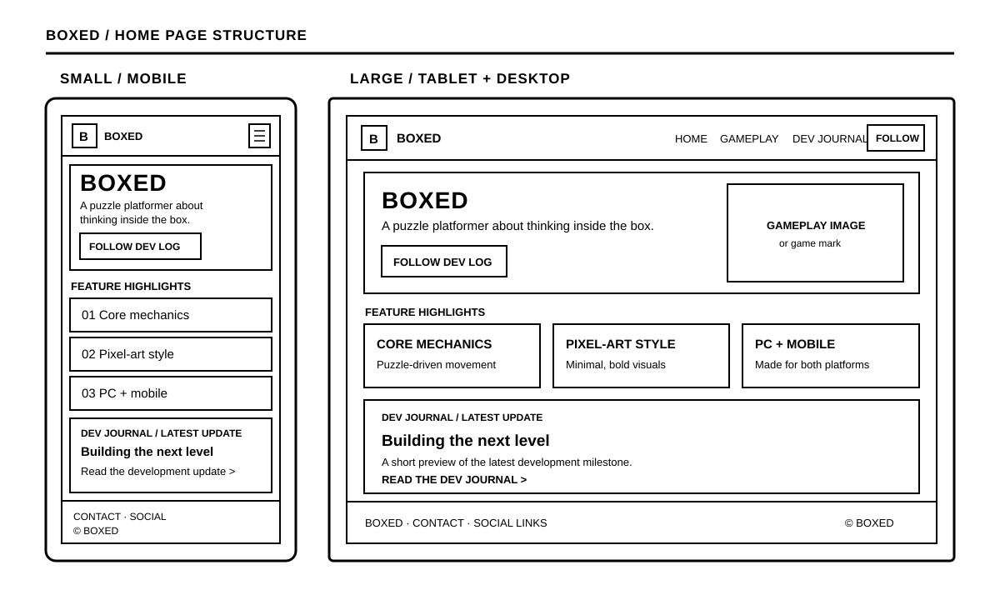

Individual project · planning document
Boxed
Think inside the box. A website plan for a minimalist pixel-art puzzle-platformer in development for PC and mobile.
Site Name
Boxed is the title of the game and the site. The short, memorable name reflects its minimalist, geometric puzzle design: every level invites players to think inside, and sometimes outside, the box.
Optional domain: playboxed.com
Site Purpose
The site is an informational hub for Boxed, a minimalist pixel-art puzzle-platformer in development for PC and mobile. It introduces the game’s concept and visual style to prospective players, explains its core mechanics, and shares development progress on the way to release.
Planned pages: Home / Overview, Gameplay & Features, and Dev Journal / Roadmap.
Audience Scenarios
These questions represent platformer fans, puzzle lovers, and younger players exploring a new game:
- What kind of game is Boxed, and which platforms will it be available on?
- What makes Boxed’s puzzle-platformer mechanics different from other games in the genre?
- How can I follow the game’s development progress before it is released?
Color Scheme
The four-color palette comes directly from Boxed’s in-game art style. It will be applied consistently across this planning document and the future site.
#1A1A1A · body text, primary UI#FFFFFF · page background#8C8C8C · borders, secondary details#D7263D · headings, links, buttonsTypography
Two typefaces provide a clear distinction between expressive game branding and comfortable reading.
Home Page Wireframe
